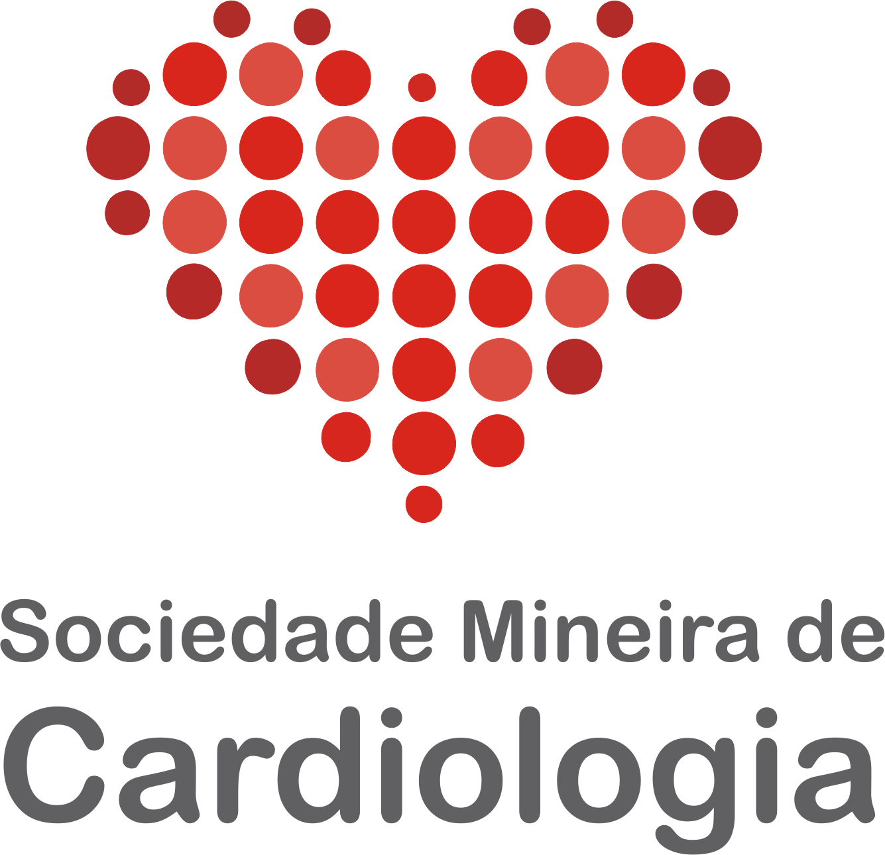

Sobre a Dra. Lívia
CRM 75151 | RQE 54430/63507
A Dra. Livia é cardiologista e ecocardiografista, especializada no cuidado de pacientes com doenças cardíacas estruturais. Com um olhar aprofundado sobre o coração, oferece tratamentos seguros, baseados em evidências atualizadas, sempre respeitando a individualidade de cada paciente.
Seu objetivo é preservar e melhorar a qualidade de vida, unindo conhecimento, cuidado humano e decisões fundamentadas. Como professora e instrutora, mantém-se constantemente atualizada, garantindo atenção e segurança no acompanhamento de seus pacientes.
⚕️ Dra. Livia busca devolver confiança, bem-estar e qualidade de vida, prevenindo complicações e oferecendo tratamentos que respeitam valores, cultura e escolhas individuais.
Experiência que faz a diferença:
